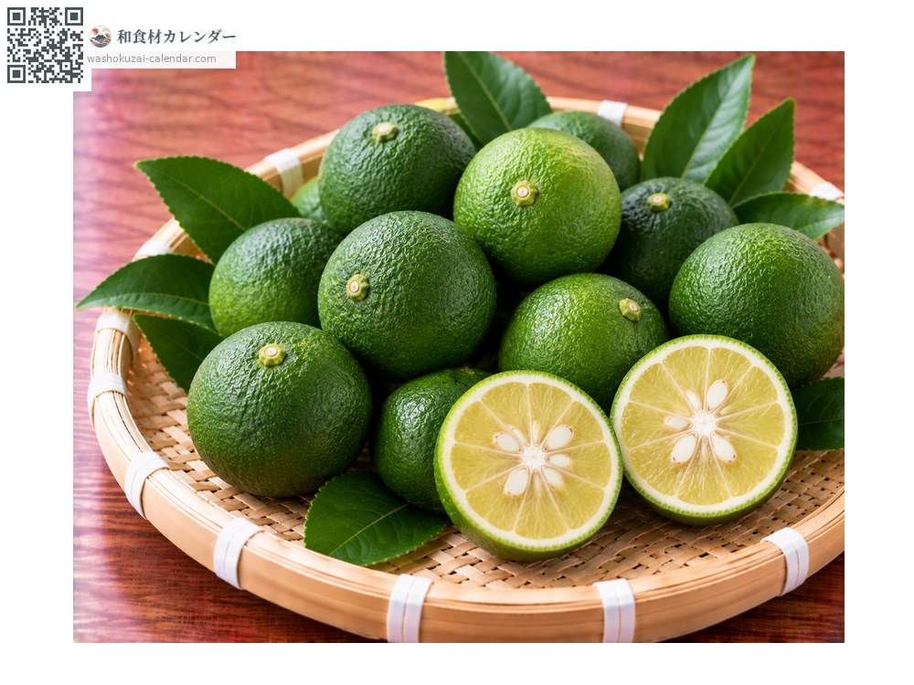
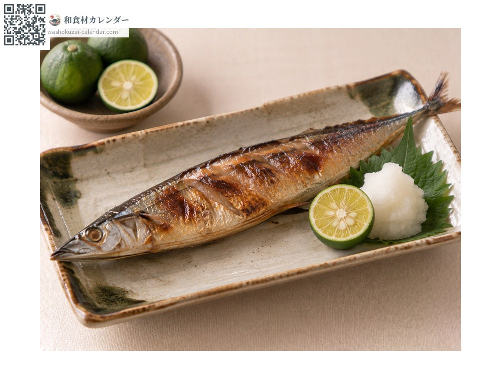
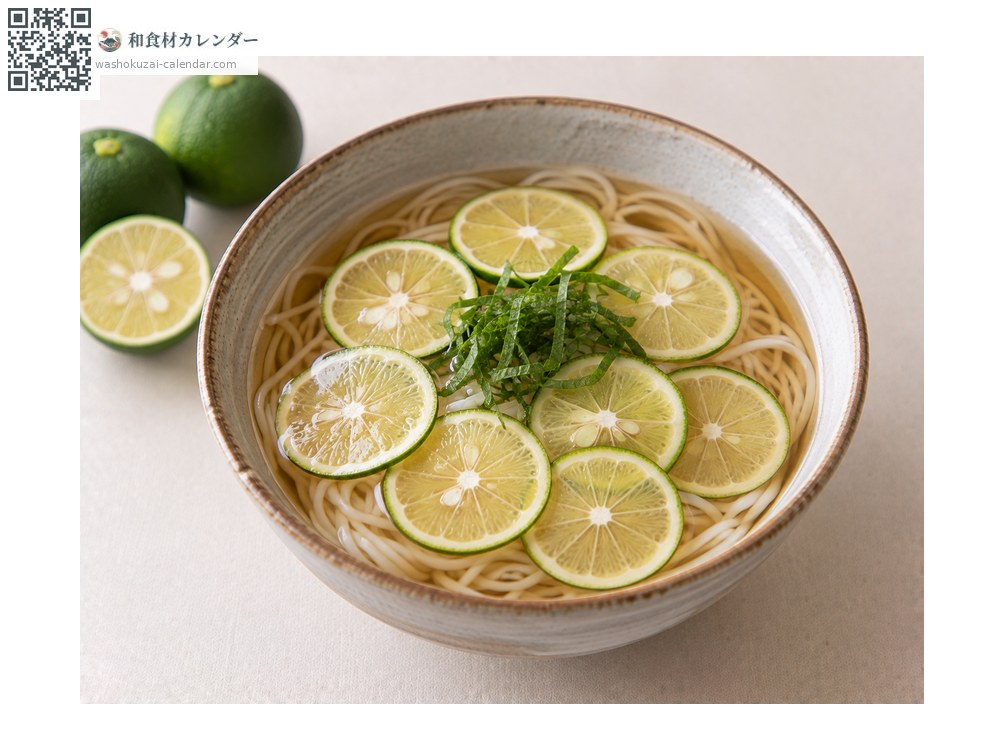
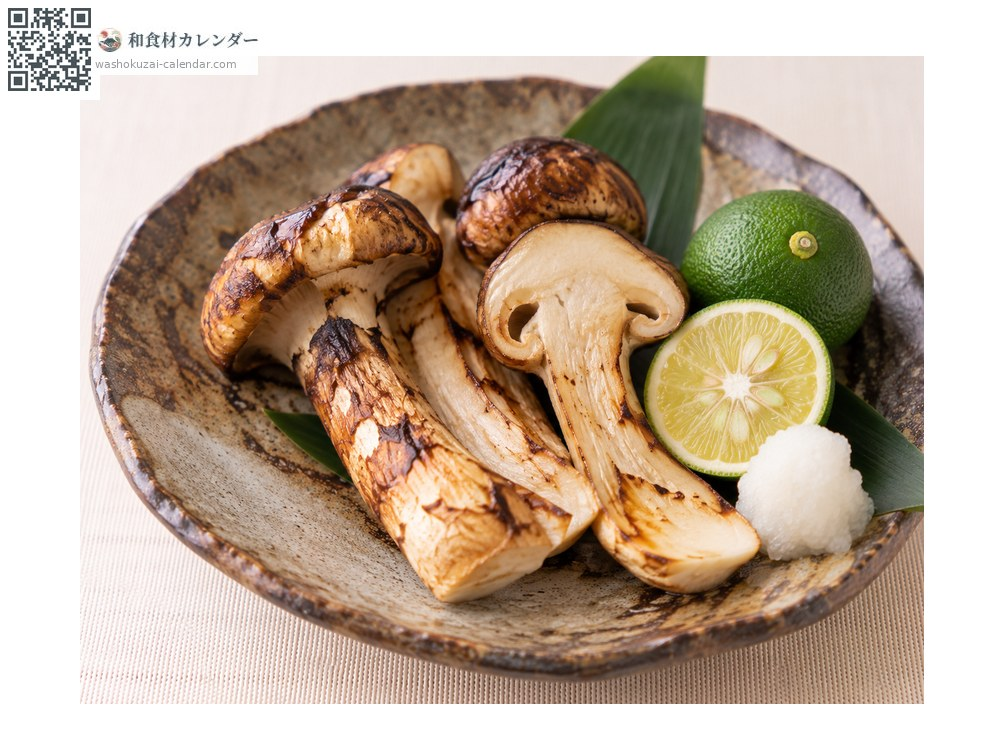
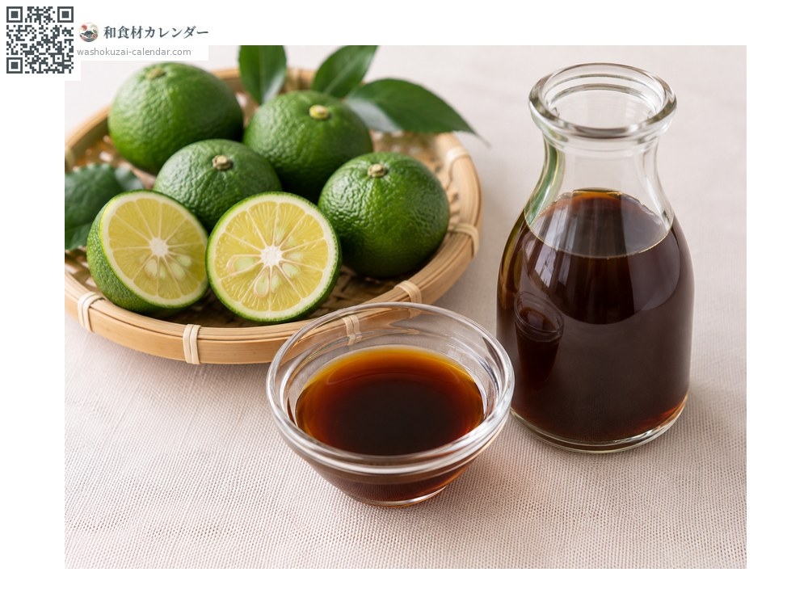

果物
スダチ
すだち
別名・別表記酢橘、sudachi
旬は8月・9月・10月

旬の時期
1月
2月
3月
4月
5月
6月
7月
8月
9月
10月
11月
12月
旬出回り
調理法

焼き魚に
絞ってかける。

そば・うどん
薄切りを浮かべる。

松茸に
土瓶蒸しや焼き松茸に。

ポン酢
絞って醤油と合わせる。
選び方
皮が濃い緑でつやがあり、持って重みがあるもの。傷がないもの。
保存方法
ポリ袋に入れて冷蔵。果汁を絞って冷凍しておくこともできる。
主な産地
豆知識
全国生産のほぼすべてが徳島県産。同じ柑橘のカボスは大分が主産地で、スダチより大きい。